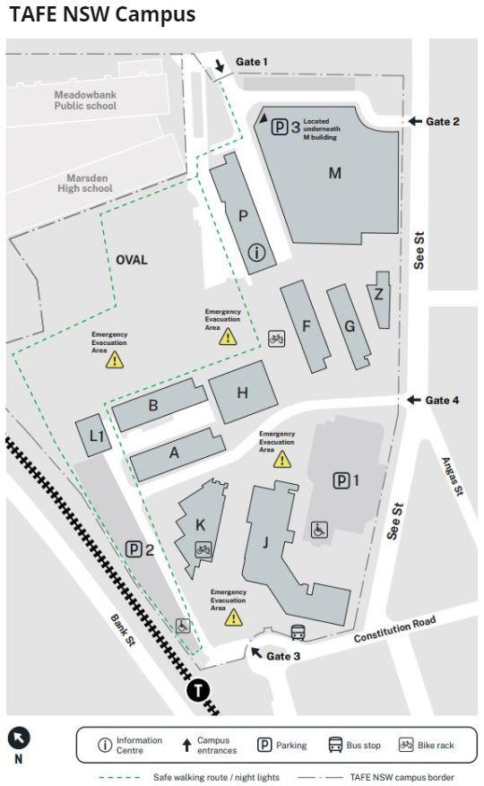

Activity 10: Follow the route
Audio: Follow the route 1, Follow the route 2, Follow the route 3, Follow the route 4, Follow the route 5, Follow the route 6
Follow the direction and draw a route on the map. There are 6 audio instructions to listen to. The map is on the following page. If you do not have a printed map, use your finger to trace where you go. If you need help, ask your teacher or support person.
Audio 1: Follow the route 1
Listen to the audio Follow the route 1 and answer the question.
Which building is in front of you?
Building F
Audio 2: Follow the route 2
Listen to the audio Follow the route 2 and answer the question.
What is in front of you?
Parking 1

Audio 3: Follow the route 3
Listen to the audio Follow the route 3 and answer the question.
What is on your right?
Building A
Audio 4: Follow the route 4
Listen to the audio Follow the route 4 and answer the question.
What is between Building F and Building H?
A bike rack
Audio 5: Follow the route 5
Listen to the audio Follow the route 5 and answer the question.
Which building is on your left?
Building M
Audio 6: Follow the route 6
Listen to the audio Follow the route 6 and answer the question.
What can you find in the building in front of you?
Information Centre
Answers
Follow the direction and draw a route on the map. If you do not have a printed map, use your finger to trace where you go. If you need help, ask your teacher or support person.
Which building is in front of you?
Building F
What is in front of you?
Parking 1
What is on your right?
Building A
What is between Building F and Building H?
A bike rack
Which building is on your left?
Building M
What can you find in the building in front of you?
Information Centre
Show transcript – Follow the route 1
Follow the route one
Start at gate 1
Go straight
Walk past building P
Which building is in front of you?
Show transcript – Follow the route 2
Follow the route 2
Start at gate 1
Go straight
Walk past building P
Then go between building F and building G
What is in front of you?
Show transcript – Follow the route 3
Follow the route 3
Start at gate 3
Go straight
Walk between building K and building J
Then turn left on the road
What is on your right?
Show transcript – Follow the route 4
Follow the route 4
Start at gate 4.
Go straight.
Walk past building G.
What is between building F and building H?
Show transcript – Follow the route 5
Follow the route 5
Go out of the train station
Go past the bus stop and turn left into See street
Then go straight and past gate 4 and building Z
Which building is on your left?
Show transcript – Follow the route 6
Follow the route 6
Start at gate 4
Go straight
Walk past building G and F, and turn right
Go past the bike rack
What can you find in the building in front of you?